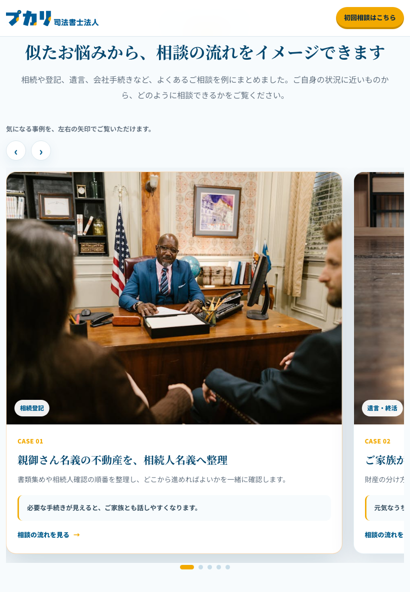
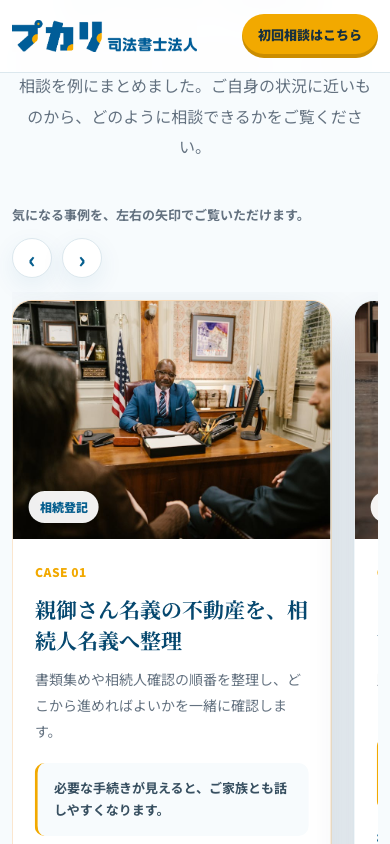

1. 見せ方を相談者向けに変更
制作側の説明ではなく、訪問者が「自分に近い相談かも」と感じられる `ご相談事例` として見えるようにしました。
司法書士HP制作 / 解決事例セクション
甲斐さんからの「ページ中ほどに横スクロールの解決事例を入れられるか」という質問に対して、 実際にモックへ入れて、PC・タブレット・スマホ幅で表示確認しました。
SWELLでよく見るような、写真つきカードを横に送って読むイメージ。
現在のv0.1.7では、相談事例を写真つきカードにして、PCでは左右の矢印、 スマホでは横に送って見られる形まで確認しています。
今は見せ方の確認用として仮の写真・仮の相談事例を入れています。 実際に載せる内容は、守秘性に配慮して差し替えます。
制作側の説明ではなく、訪問者が「自分に近い相談かも」と感じられる `ご相談事例` として見えるようにしました。
事例を1枚ずつカードにし、写真・カテゴリ・見出し・短い説明をまとめています。 気になる事例へ自分のペースで進めます。
PCだけでなく、タブレットとスマホ幅でも確認しました。 一度出ていた小さな横スクロールも修正済みです。
横に並ぶ事例カードを追加。質問への最初の回答としては使えるが、見た目はまだ簡易版。
写真つきのカード表示に変更。矢印・点・横送りの動きも入れた。
最後から先頭へ戻る時の不自然さを抑え、連打しても崩れにくいようにした。
画面上の制作側説明を削り、訪問者向けの自然な相談事例セクションにした。
| 確認した幅 | 確認したこと | 結果 |
|---|---|---|
| PC 1440px | ページ全体の横スクロール、カード表示、矢印操作 | 問題なし |
| タブレット 820px | 横幅のはみ出し、見出し、事例カードの表示 | 修正後、問題なし |
| スマホ 390px | 横スクロール、ボタン、カード、CASE 01からCASE 02への切り替え | 修正後、問題なし |
右側に次のカードが少し見えるのは、横に送れることを伝えるための見せ方として残しています。 ページ全体が横にズレる問題は修正済みです。
下は説明用の小さな図です。実際のHPでは、この形をページ中ほどに入れます。

必要書類と流れが分かると、ご家族とも話しやすくなります。

将来の不安を減らすため、できることから一緒に整理します。

使える制度や進め方を、できるだけ分かりやすく整理します。
ここは作業確認用です。タブレット幅・スマホ幅でも大きく崩れていないことを見るための画像です。


ページ中ほどに、相談事例を写真つきカードで横に送って見られる形は実装できます。 PCでは矢印で、スマホでは横に送って見られる形です。現在は仮の写真・仮文言ですが、 PC・タブレット・スマホ幅で表示確認済みです。正式には、掲載する事例内容・写真・伏せ方を確認して差し替えます。